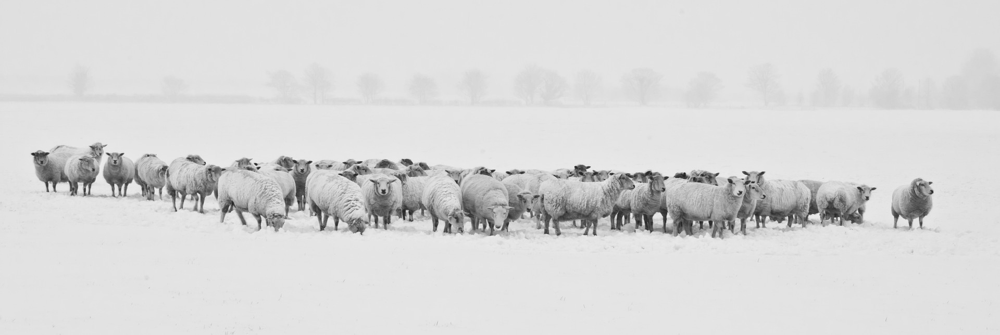

Image Editing Beyond 512x512
4K+ Resolution Image Editing
| CSD-Edit facilitates high-quality editing of images with a resolution beyond 4K (3991x4395) in accordance with the provided prompts. |
For a detailed view of the edits, hover your cursor over the image to zoom in.

Source image

CSD-Edit (Ours)
Compositional Editing of Panorama Images
| CSD-Edit demonstrates consistent and coherent editing across patches in panorama images. Thus, it provides the unique ability to manipulate each patch according to different instructions, while maintaining overall structure of the source image coherently and ensuring smooth transition between patches with different instructions. |
Object Editing of Panorama Images
| CSD-Edit demonstrates consistent and coherent editing of the objects in source panorama image. |
